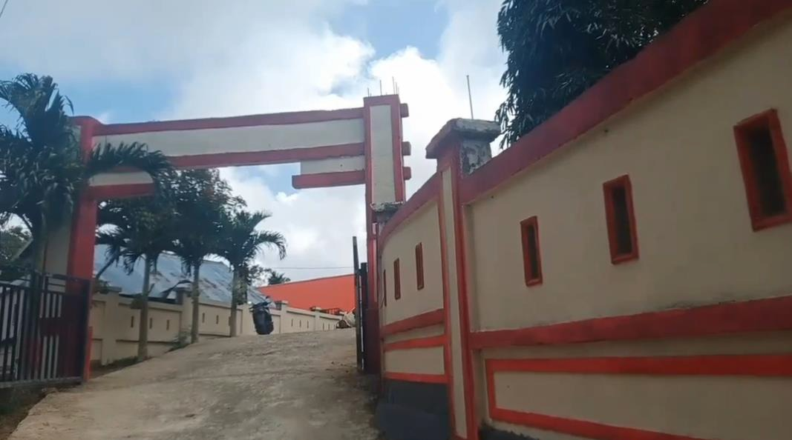

Profil Sekolah



Sejarah
SMAN 9 KEPULAUAN SELAYAR pada awal pendiriannya bernama SMA 1 BONTOMANAI, kemudian berubah nama menjadi SMAN 9 SELAYAR dan perubahan terakhir menjadi SMAN 9 KEPULAUAN SELAYAR. Sekolah ini dibangun tahun 2015 dan diresmikan oleh bupati Kepulauan Selayar MUH.BASLI ALI pada tahun 2016.
Visi
Terwujudnya peserta didik yang beriman dan bertaqwa kepada tuhan yang maha esa, berakhlak mulia, sehat, berprestasi, serta berbudaya lingkungan sehingga mampu bersaing di era baru
Misi
- Membentuk peserta didik yang beriman dan bertaqwa kepada tuhan yang maha esa
- mengembangkan karakter peserta didik untuk cinta tanah air
- Mengembangkan rasa solidaritas dan toleransi peserta didik melalui kegiatan intrakurikuler maupun ekstrakurikuler
- Membiasakan pola hidup bersih sehat(PHBS) dan lingkungan sekolah yang sehat sehingga memungkinkan peserta didik mengalami pertumbuhan dan perkembangan optimal
- Membangun karakter peserta didik menjadi pembelajar sepanjang hayat
- Meningkatkan pembelajaran yang dapat mengembangankan peserta didik yang unggul dalam pengetahuan dan teknologi dengan memanfaatkan kemajuan informatika
- Membentuk peserta didik yang mampu mengembangkan potensi daerah
- Membiasakan peserta didik melakukan kegiatan penghijauan lingkungan